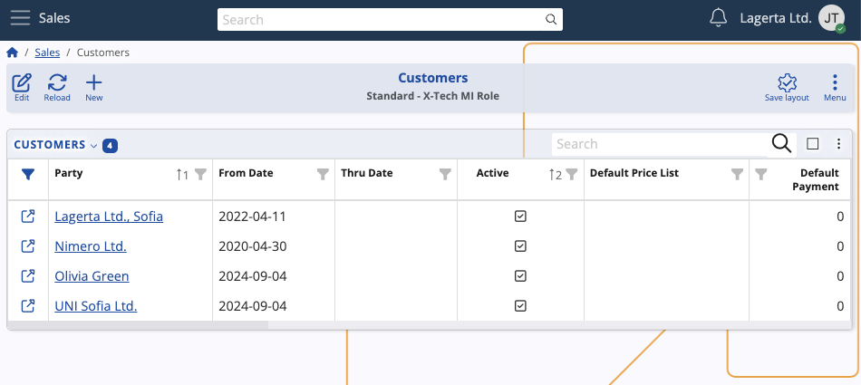
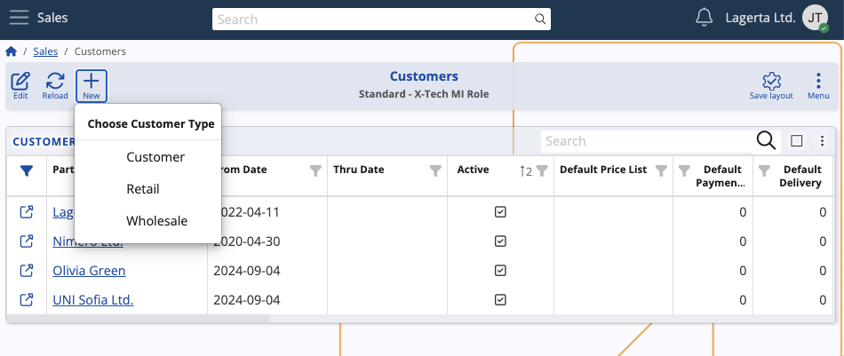
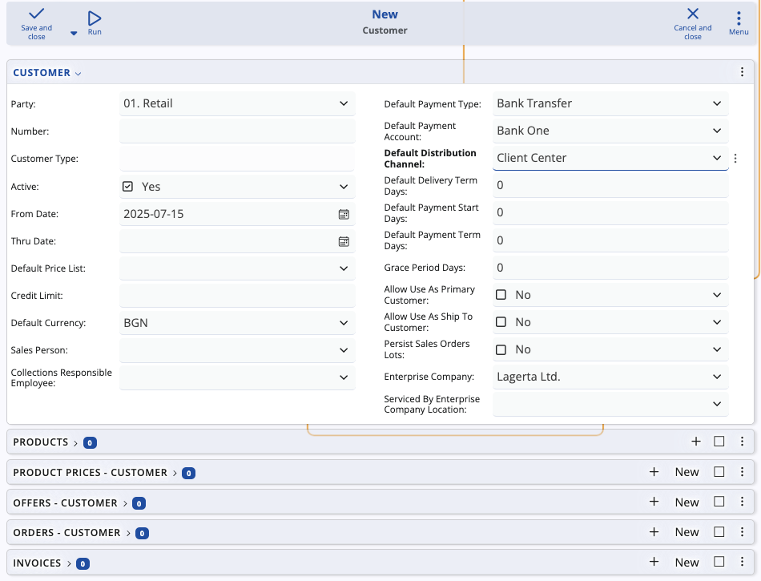

Customers
A customer is considered an external party that purchases goods or services from an organization. Each customer record plays a central role in sales, invoicing, fulfillment, and financial reporting processes.
In ERP.net, the Customers table displays all of your customer records in a structured format.

Details
The table provides a comprehensive view of each customer's profile in your organization.
For every customer record, you can see their financial setup, including which default price list they use, their standard payment method and account, and their assigned currency for transactions.
The table also displays operational details such as default delivery terms, default distribution channel, credit limits, and which sales person and collections employee are responsible for managing their account.
Create a new customer
To add a new customer, click the New button.
The system allows you to select a customer type directly from here: Customer, Retail, and Wholesale.

Creating a new customer involves setting up their identification, financial and operational defaults, system permissions, and enterprise assignments for immediate use in sales processing.
It also involves adding products, prices and other entities contracted with them.
For more information, please refer to How to define a customer.

Note
The screenshots taken for this article are from v26 of the platform.